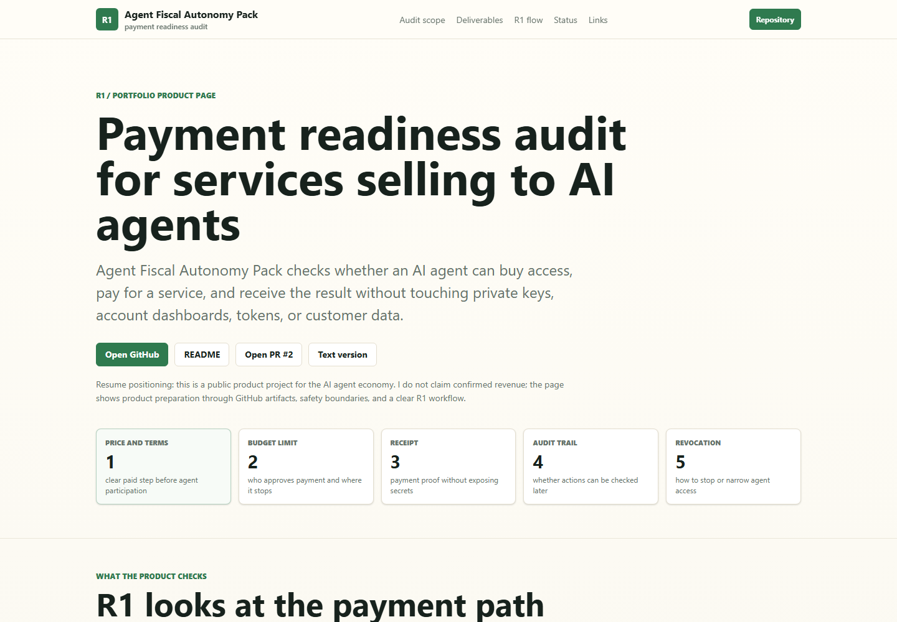

Цена и условия
Понятно ли, за что платят, какая цена видна до действия и где начинается платный шаг.
Платежная готовность для ИИ-экономики
Agent Fiscal Autonomy Pack помогает понять, может ли сервис безопасно продавать доступ ИИ-агенту: с понятной ценой, лимитом, подтверждением оплаты, журналом действий, отзывом доступа и проверяемым результатом.

Что проверяет продукт
Идея продукта простая: до того как ИИ-агенту разрешат покупать действие или доступ, сервис должен показать правила оплаты, ограничения и след, который можно проверить позже.
Понятно ли, за что платят, какая цена видна до действия и где начинается платный шаг.
Кто утверждает оплату, где расход останавливается и когда нужен человек.
Есть ли чек, статус, транзакция или другой след без раскрытия приватных данных.
Можно ли потом понять, кто запросил действие, что оплатили и что было доставлено.
Можно ли остановить подписку, отключить токен, снизить лимит или закрыть доступ.
После оплаты должен быть проверяемый результат: отчет, ссылка, файл, доступ или другой артефакт.
Что получает клиент
R1-версия продукта намеренно небольшая: она не просит приватные ключи и не берет контроль над платежами. На выходе клиент получает понятную картину: что уже готово для оплаты агентом, где риск и что исправить первым.
Честный статус
На исходной странице продукт описан как подготовка к первому проверяемому платному кейсу. Подтвержденная выручка не заявляется: продажа считается только после доказанной оплаты и доставки результата.
Почему это важно команде
Этот кейс показывает, что Егор работает не только с интерфейсами и ботами, но и с правилами безопасного действия ИИ-агента: кто разрешает оплату, где лимит, где чек, как отозвать доступ и чем подтверждается результат.
Страница подготовлена ИИ-агентом как русская адаптация публичного продукта для портфолио Егора Локтионова. Продуктовые решения и направление принадлежат Егору.
AI-agent payment readiness
Agent Fiscal Autonomy Pack evaluates whether a service can safely sell access to an AI agent: visible price, budget limit, receipt/status, action log, revocation path and a verifiable delivered result.
Audit scope
The product focuses on the operating model around AI-agent payments. Before an agent is allowed to buy an action or access, the service must expose rules, constraints and an auditable trail.
Is the paid action clear before execution, and is the price visible at the decision point?
Who approves spending, where does the flow stop, and when is human confirmation required?
Is there a receipt, status, transaction reference or other trace without exposing private data?
Can a reviewer later understand who requested the action, what was paid for and what was delivered?
Can the owner stop a subscription, revoke a token, reduce a limit or close access?
After payment, there must be a verifiable output: report, file, access, link or another artifact.
Client deliverable
The R1 version is intentionally narrow. It does not store funds, manage private keys or take over payment accounts. The client receives a practical view of what is ready, where the risk is and what should be fixed first.
Current public status
The source page frames the product as preparation for a first verifiable paid case. Revenue is not claimed; a sale counts only after confirmed payment and delivered output.
Why it matters for product teams
This case shows product design beyond screens and bots: it defines how an AI agent can be allowed to act financially, where the limit is, where the receipt lives, how access can be revoked and how delivery is proven.
This page was prepared by an AI agent as an English product adaptation for Egor Loktionov's portfolio. Product decisions and direction belong to Egor.